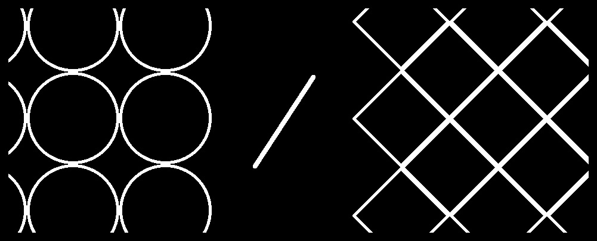

my name is caio and some people call me smart
or genius talented and that i have a bright brain...
or just bright... like the sun
the sun is a star in the center of our solar system which is on the milky way
it was believed that 1.3 million earths could fit inside our solar system sun
this is what would be the math about how many earths would fit in the sun
its simply getting the sun volume and dividing it by the earth volume
but if you think just a little bit you know that spheres are not like cubes
or others shapes, spheres dont fit in each other

just like that, as you can see the round shapes the spheres let some gaps
so calculating every gap that it would make in a 3D space
it would would fit 932.884 earths inside the sun